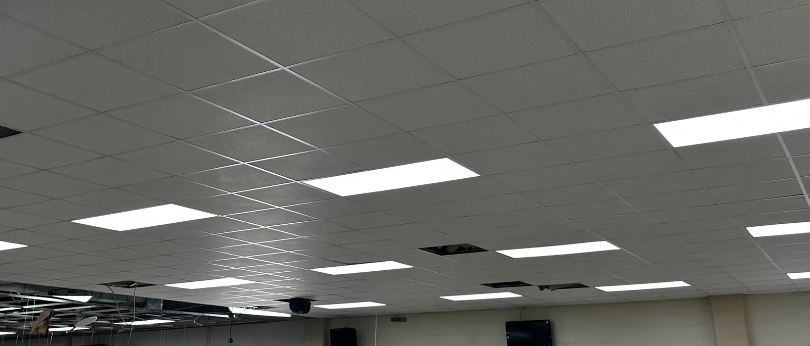
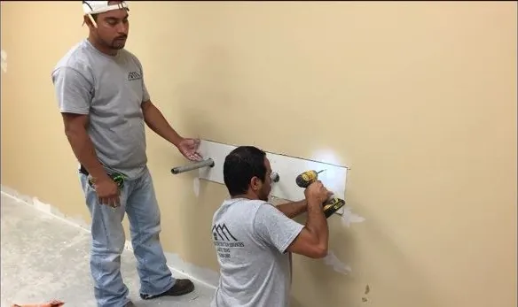
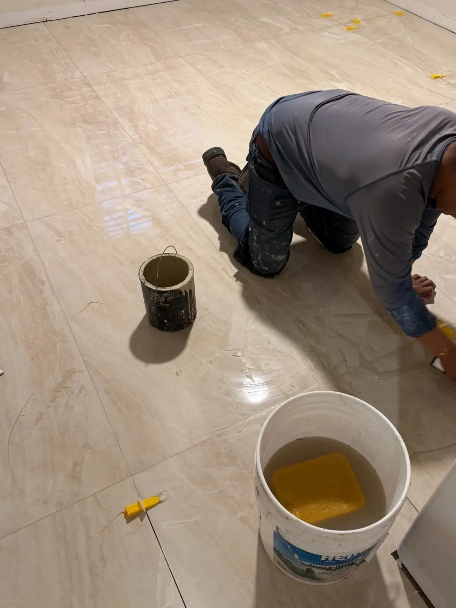
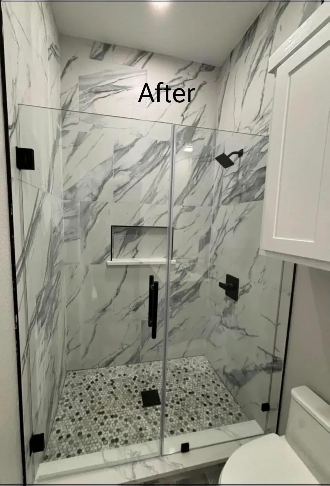
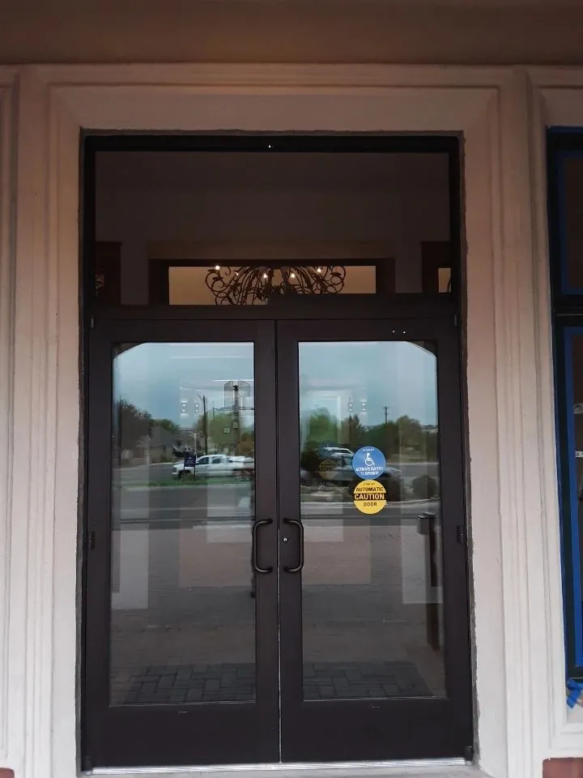
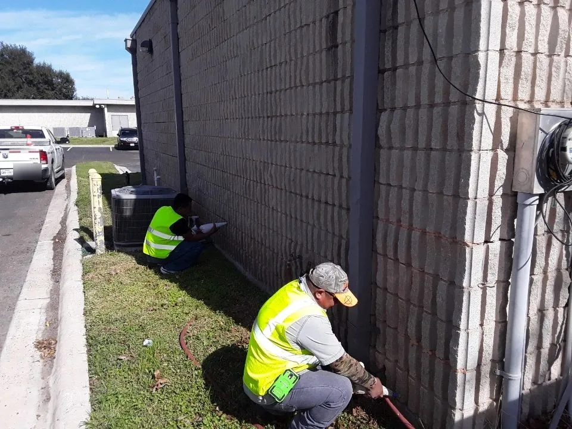
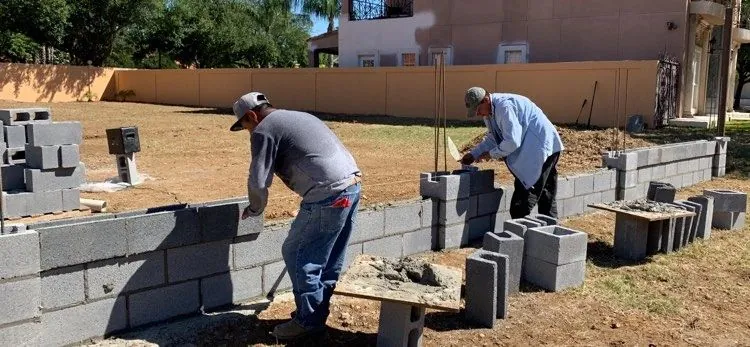
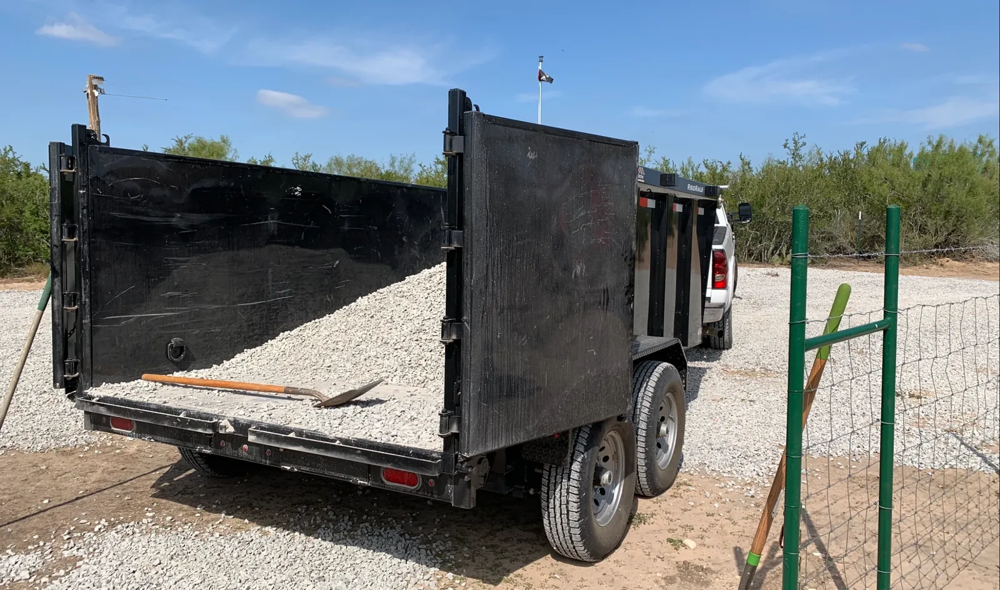
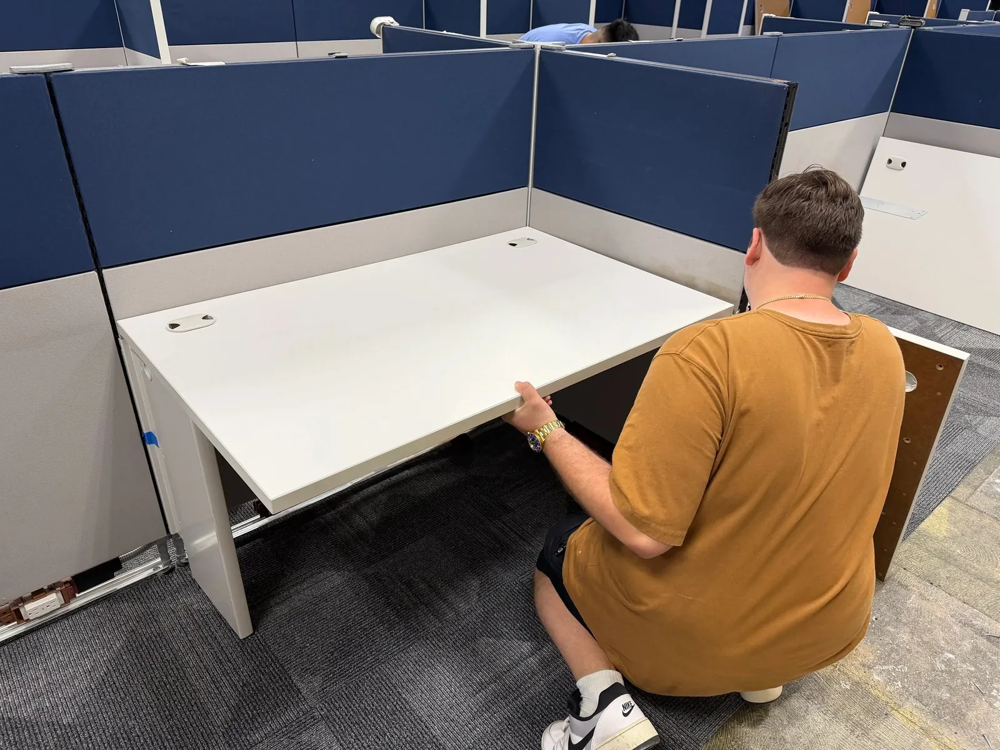

01 / 23
Commercial Construction
New construction and repairs/restorations for businesses. Occupied, fully operational job sites are never a problem, and multi-phase jobs can be planned, managed and built.

Home / Services
We do it all
Commercial and residential construction, interiors, exterior and site work, ranch and hauling. Here is everything on our list, and how a build runs.
Commercial and residential projects, remodels and finish outs, planned and managed from start to finish.
New construction and repairs/restorations for businesses. Occupied, fully operational job sites are never a problem, and multi-phase jobs can be planned, managed and built.
Construction and repair work for homes, from a single fix to a larger project.

Interior remodels that rework existing rooms and spaces.

Interior finish outs that turn a shell into a finished, livable cabin.
Paint, drywall, flooring, bathrooms, ceilings and glass.

Interior and exterior painting.

Drywall installation and repairs.

Flooring installation, including tile and wood-look plank floors.

Bathroom remodels, from tub-and-tile to a finished walk-in shower.
Suspended (drop) ceiling grid and tile installation for commercial spaces.

Glass and glazing work, such as storefront-style glass doors.
Roofing, masonry, concrete, asphalt and the ground around the building.

Roof repairs and installations, including new shingle roofs.

Masonry work on block and brick walls.

Concrete block fence construction.

Concrete slab pours and finishing.

Asphalt paving.

Parking lot asphalt and restriping, with stalls, arrows and hatched zones.
Landscaping services for residential and commercial properties.
Ranch services, septic, dump trailer, moving and assembly.

Ranch work and land clearing with heavy equipment.
Septic tank services.

Dump trailer services for hauling material such as gravel.

Moving services with a stake-bed truck.

Furniture assembly, including office workstations.

Gazebo assembly for backyards and outdoor living areas.
How it works
Every build follows the same path, from the first budget check to the final walkthrough.
This phase includes constant monitoring and interaction. We keep an eye on budgets to ensure the lowest costs, stay on top of schedules for timely delivery and work closely with the design team to create your vision.
Working with trusted subcontractors, we keep them accountable throughout the entire build. From sequence to production and quality control, we stay focused on the goal.
The last step in any build. This phase includes site cleanup, systems training, final inspections and move-in coordination. After completion, we have a final walkthrough to ensure your complete satisfaction.
Got a project?
Call for a quote or tell us about your project. New construction, repairs, restorations and everything on our list, in Laredo.